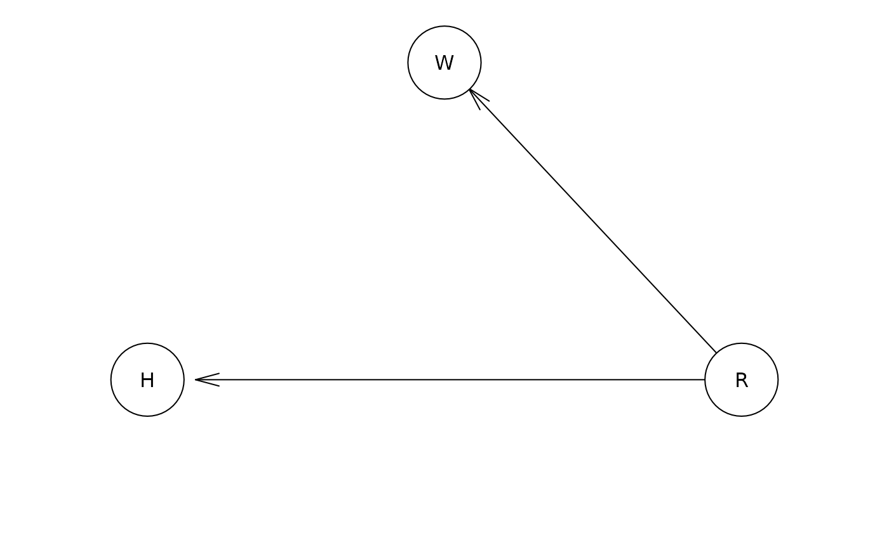

Conditional-and-Interventional-Distribution
Conditional-and-Interventional-Distribution.RmdWarning: The following is very experimental and could be very wrong. This is just a first draft at getting interventional distributions from SEM by leveraging Bayesian networks. A proper discussion of observational and interventional distribution can be found in Gische and Voelkle (2022).
Bayesian Networks allow investigating the conditional and interventional distribution of network nodes.
The central difference between conditional and interventional distribution can be explained with the classical sprinkler-rain model (see e.g., Murphy 2012, 944). However, because it is a German tradition to explain everything with cars, we will use a variation thereof. Let’s assume we are interested in the relations between Rain (R), hydroplaning (H) and windscreen wipers (W). Rain causes both hydroplaning and the activation of windscreen wipers:

Now, knowing that the windscreen wipers are activated, it is a fairly likely that it rains and therefore the likelihood of hydroplaning is also higher. This is expressed by the conditional distribution .
Of course, activating or deactivating the windscreen wipers (i.e., intervening on the windscreen wipers) will not cause the weather to change, nor will it cause hydroplaning. This is expressed in the interventional distribution .
Specity Model in bnlearn
Let’s investigate the model above with bnlearn (Scutari 2009).
# the following code is adapted from https://www.bnlearn.com/examples/custom-fitted/
library(bnlearn)
R <- matrix(c(0.2, 0.8),
ncol = 2,
dimnames = list(NULL, c("TRUE", "FALSE")))
W <- matrix(data = c(.9, .2,
.1, .8),
nrow = 2,
ncol = 2,
byrow = TRUE,
dimnames = list(c("TRUE", "FALSE"),
c("TRUE", "FALSE")))
H <- matrix(data = c(.8, .05,
.2, .95),
nrow = 2,
ncol = 2,
byrow = TRUE,
dimnames = list(c("TRUE", "FALSE"),
c("TRUE", "FALSE")))
net = model2network("[R][W|R][H|R]")
fit = custom.fit(net, dist = list(R = R,
W = W,
H = H))
print(fit)
#>
#> Bayesian network parameters
#>
#> Parameters of node H (multinomial distribution)
#>
#> Conditional probability table:
#>
#> R
#> H TRUE FALSE
#> TRUE 0.80 0.05
#> FALSE 0.20 0.95
#>
#> Parameters of node R (multinomial distribution)
#>
#> Conditional probability table:
#>
#> TRUE FALSE
#> 0.2 0.8
#>
#> Parameters of node W (multinomial distribution)
#>
#> Conditional probability table:
#>
#> R
#> W TRUE FALSE
#> TRUE 0.9 0.2
#> FALSE 0.1 0.8Conditional Distribution
Let’s first investigate the conditional probability of hydroplaning
given that the windscreen
wipers are on. We can do so with the cpquery function (see
?bnlearn::cpquery):
cpquery(fitted = fit,
event = (H == "TRUE"),
evidence = (W == "TRUE"),
n = 100000)
#> [1] 0.4434798Now, let’s investigate the conditional probability of hydroplaning
given that the windscreen
wipers are off:
cpquery(fitted = fit,
event = (H == "TRUE"),
evidence = (W == "FALSE"),
n = 100000)
#> [1] 0.07277151We can see that knowing the status of the windscreen wiper allows us to also make a better guess of whether to expect hydroplaning.
Interventional Distribution
For the interventional distribution we have to look at the so-called
mutilated network (see ?bnlearn::mutilated). The basic idea
here is that intervening on the windscreen wiper will cut any connection
of the windscreen wiper and its parent nodes (here rain). First, let’s
look at the probability of hydroplaning given we turn the windscreen
wipers on. In the following, note how windscreen wipers W is no longer
affected by rain R:
mut <- mutilated(x = fit,
evidence = list("W" = "TRUE"))
print(mut)
#>
#> Bayesian network parameters
#>
#> Parameters of node H (multinomial distribution)
#>
#> Conditional probability table:
#>
#> R
#> H TRUE FALSE
#> TRUE 0.80 0.05
#> FALSE 0.20 0.95
#>
#> Parameters of node R (multinomial distribution)
#>
#> Conditional probability table:
#>
#> TRUE FALSE
#> 0.2 0.8
#>
#> Parameters of node W (multinomial distribution)
#>
#> Conditional probability table:
#> TRUE FALSE
#> 1 0The probability of hydroplaning given we turn the windscreen wipers on is given by:
cpquery(fitted = mut,
event = (H == "TRUE"),
evidence = TRUE,
n = 100000)
#> [1] 0.20054Now, let’s look at the probability of hydroplaning given we turn the windscreen wipers off:
mut <- mutilated(x = fit,
evidence = list("W" = "FALSE"))
print(mut)
#>
#> Bayesian network parameters
#>
#> Parameters of node H (multinomial distribution)
#>
#> Conditional probability table:
#>
#> R
#> H TRUE FALSE
#> TRUE 0.80 0.05
#> FALSE 0.20 0.95
#>
#> Parameters of node R (multinomial distribution)
#>
#> Conditional probability table:
#>
#> TRUE FALSE
#> 0.2 0.8
#>
#> Parameters of node W (multinomial distribution)
#>
#> Conditional probability table:
#> TRUE FALSE
#> 0 1
cpquery(fitted = mut,
event = (H == "TRUE"),
evidence = TRUE,
n = 100000)
#> [1] 0.20083Note how the probability of hydroplaning is no longer predicted by the windscreen wiper status. This is because we cut the link to the parent node - rain R - by intervening on the windscreen wiper.
Structural Equation Models
The difference between conditional and interventional distribution in SEM is discussed in detail by Gische and Voelkle (2022).
To apply the ideas outlined above to an SEM, we will use a the Political Democracy model fitted with OpenMx (Neale et al. 2016). The model is given by:
library(mxsem)
model <- '
# latent variable definitions
ind60 =~ x1 + x2 + x3
dem60 =~ y1 + a*y2 + b*y3 + c*y4
dem65 =~ y5 + a*y6 + b*y7 + c*y8
# regressions
dem60 ~ ind60
dem65 ~ ind60 + dem60
# residual correlations
y1 ~~ y5
y2 ~~ y4 + y6
y3 ~~ y7
y4 ~~ y8
y6 ~~ y8
'
mx_model <- mxsem(model,
data = OpenMx::Bollen) |>
OpenMx::mxTryHard()First, we translate the model to a Bayesian network:
network <- bnSEM::bnSEM(mx_model = mx_model)Next, we want to investigate the conditional distribution of dem65 given y6 = 1. Here, we will use the cpdist function to generate samples.
cond_dist <- bnlearn::cpdist(fitted = network$bayes_net,
nodes = "dem65",
evidence = list("y6" = 1),
method = "lw")
# Using likelihood weighting, we have to take the weights into account when
# computing the expected value and the variance
# mean
(m <- sum(cond_dist$dem65 * attr(cond_dist, "weights")) / sum(attr(cond_dist, "weights")))
#> [1] -0.9471441
# variance
sum(attr(cond_dist, "weights") * (cond_dist$dem65 - m)^2)/
sum(attr(cond_dist, "weights"))
#> [1] 1.990131To get the interventional distribution, we can again use the mutilated network:
mut <- mutilated(x = network$bayes_net,
evidence = list("y6" = 1))
inter_dist <- cpdist(fitted = mut,
nodes = "dem65",
evidence = TRUE,
method = "lw")
# mean
(m <- sum(inter_dist$dem65 * attr(inter_dist, "weights")) / sum(attr(inter_dist, "weights")))
#> [1] -0.01412657
# variance
sum(attr(inter_dist, "weights") * (inter_dist$dem65 - m)^2)/
sum(attr(inter_dist, "weights"))
#> [1] 4.554579Note that this is identical to the expected value of dem65 (0; with some numerical imprecision due to sampling).
Let’s look at another example. To this end, we will first check the mean and variance of x1 in our network.
dist <- bnlearn::cpdist(fitted = network$bayes_net,
nodes = "x1",
evidence = TRUE,
method = "lw")
# mean
(m <- sum(dist$x1 * attr(dist, "weights")) / sum(attr(dist, "weights")))
#> [1] 5.062848
# variance
sum(attr(dist, "weights") * (dist$x1 - m)^2)/
sum(attr(dist, "weights"))
#> [1] 0.5276746Now, let’s check the conditional mean and variance of x1 are given that dem60 = 3
cond_dist <- bnlearn::cpdist(fitted = network$bayes_net,
nodes = "x1",
evidence = list("dem60" = 3),
method = "lw")
# mean
(m <- sum(cond_dist$x1 * attr(cond_dist, "weights")) / sum(attr(cond_dist, "weights")))
#> [1] 5.462163
# variance
sum(attr(cond_dist, "weights") * (cond_dist$x1 - m)^2)/
sum(attr(cond_dist, "weights"))
#> [1] 0.4428409Note how knowledge about dem60 provides us with information about the indicator x1 of ind60.
When intervening on dem60, in contrast, we don’t change our expectation for x1:
mut <- mutilated(x = network$bayes_net,
evidence = list("dem60" = 10))
inter_dist <- cpdist(fitted = mut,
nodes = "x1",
evidence = TRUE,
method = "lw")
# mean
(m <- sum(inter_dist$x1 * attr(inter_dist, "weights")) / sum(attr(inter_dist, "weights")))
#> [1] 5.052059
# variance
sum(attr(inter_dist, "weights") * (inter_dist$x1 - m)^2)/
sum(attr(inter_dist, "weights"))
#> [1] 0.529606